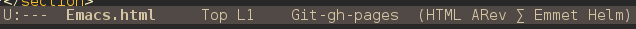

Charla Emacs
Coyote3007 & Nacho
SexyACM@BestAsocEUW.io
Prefurcia Prefacio
Todo lo aqui expuesto esta creado usando emacs como herramienta principal (Much powerfull) Tutorial usado para crear esta presentacion
Agradecimientos
- Pablo Nogueria
- Manuel Hermenegildo
- @rockneurotiko
- Álvaro Iturmendi
At first I was like
 Meh, nada de otro mundo…
Meh, nada de otro mundo…
But then …

My power increased
Vamos despacito
Por qué deberia aprender emacs??
Emacs, SublimeText, Vim, Notepad++, Gedit, Nano…
Hay demasiados!!
Es Personalizable 110%
- Colores
- Indentaciones
- Modos
- Macros
- Y la lista sigue…
Tiene infinidad de herramientas
MELPA con 2.984 paquetes es el repositorio mas grande de paquetes para emacs. Seguido por repositorios como marmalade y savannah
Una buena comunidad
Paquetes importantes actualizados de forma periodica por la comunidad. **
Si no encuentras una funcionalidad… IMPLEMENTALA!
Si aun asi no has encontrado lo que tu buscas… crealo tu mismo.
Modos
Emmm modos… si… eso me suena
Que es un modo?
Un modo define el comportamiento de emacs en un entorno de trabajo determinado


Modos mayores
Un modo mayor determina una preconfiguracion para un tipo determinado de archivo
dentro de emacs.
- Son incompatibles entre si
- Reconocimiento de sintaxis
- Binding de teclas
Modos menores
Un modo menor es una utilidad especifica que activas para cada modo. A diferencia de los modos mayores, los modos menores son compatibles entre si.
Paquetes
Emacs ofrece la posibilidad de instalar funcionalidades extra en forma de paquetes mediante un gestor de paquetes o bien descargando el codigo fuente e importarlo en el archivo de configuracion.
MELPA, marmalade y toda esa vaina
Chorrocientosmil paquetes y todos con cosicas bonicas. Necesita, busca, encuentra y usa. Es la forma mas efectiva de aprender.
Chachi, ya se cual quiero. Ahora que?
Supongamos que queremos instalar autoindent. Para ello tenemos varias opciones
Mediante el gestor de paquetes (Lento)
- M-x
- package-refresh-contents
- M-x
- package-list-packages
- Seleccionamos el/los paquete/s con I
- Instalamos los paquetes seleccionados con x
- Configurar el paquete en el archivo de configuracion
Mediante el gestor de paquetes (Rapido)
- M-x
- package-install
- org-mode
- Configurar el paquete en el archivo de configuracion
Mediante el codigo fuente
Depende del paquete a instalar habra mas o menos pasos, pero grosso modo:
- Descargar el codigo fuente (org-mode.el)
- Se recomienda mover a un subdirectorio del path ./emacs.d/
- Cargar el paquete en el init.el
Demo
@Rockneurotiko
Pablo Nogueira
Manuel Hermenegildo
Configuracion de emacs
Al arrancar emacs carga el archivo /.emacs.d/init.el como archivo de configuracion. En este archivo se pueden cargar otros archivos de configuracion secundarios para poder tenerlo modularizado. Para poder recargar la configuracion una vez guardada, se usa el comando M-x eval-buffer sobre tu init.el
Paquetes de interes
Prelude
Oh-my-emacs
Ergoemacs
Org-mode
Magit
Autocomplete
Company
Helm
Autoindent
Cheatsheet
Camcorder
Restclient
Flycheck
Yasnippet
Helm
Smex
Rainbow delimiters
Awesome-emacs
Taller: Configurar emacs
A LA PORRA CON TODO

Vamos a empezar desde cero…
Pero… por donde?
- Crear archivo init.el
- CheatSheet
- PDF - refcard
{kind=link}
Paquetes
- Sincronizar emacs con los repositorios de MELPA
esto es feo de narices…
- Cambiar el aspecto del entorno
- Tema
- Fuente
- Crear cheatsheet
Mas!
- Instalar uno o varios paquetes
Y ahora viene la…